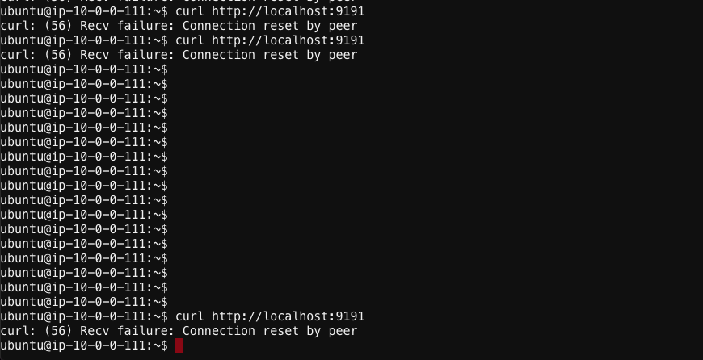

Lesson10 –> Test microapp1 to app1 communication¶
Goto the ubuntu WebShell and login to udf
Change dir to
`/home/udf/consul-tg-env/tffiles`if not in that dirTo login into the microapp1 vm execute
`ssh -i "terraform-20200922185123933400000001.pem" ubuntu@54.190.194.208 `To test end to end communication execute
`curl http://localhost:9191`from the microapp1 vm

Note
We did curl from microapp1 to app1, side car on microapp1 is listening on port 9191, this communication fials as we don’t have any Intentions configured on the consul connect